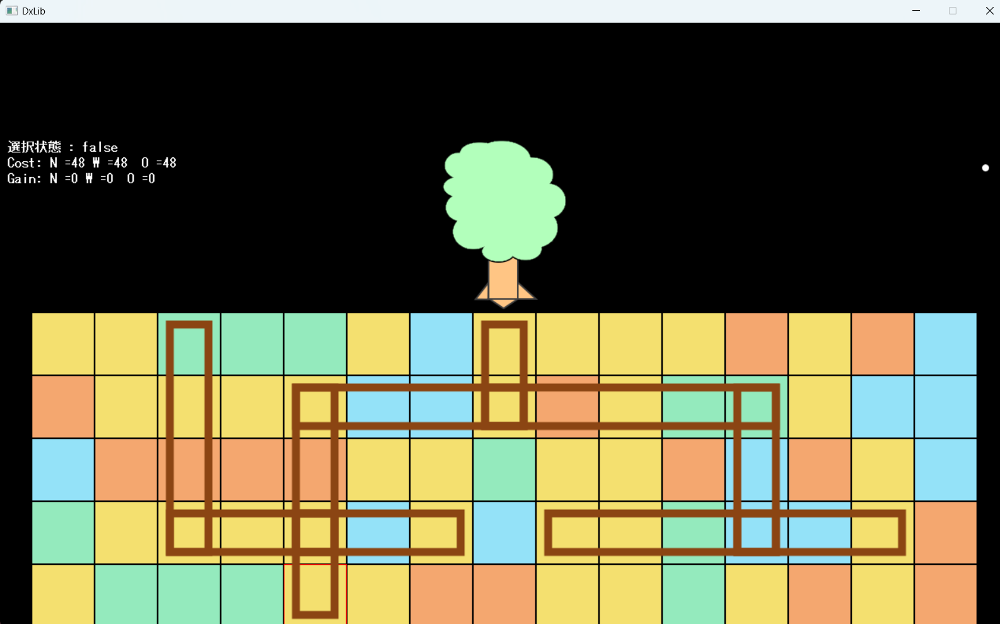
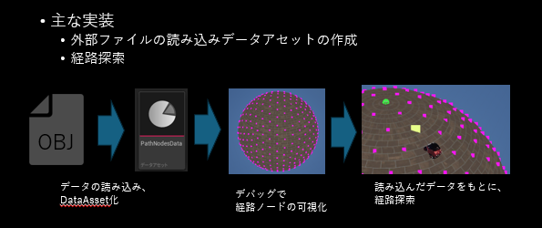

プログラミング学習歴
ポートフォリオトップへ戻るGitHubはこちら↓
GitHub_Sub1年次
学習開始
未経験（授業で触れたぐらい）
入学後、1年時にはC言語とDxlibを学習しました。
2年時は、C++、Unreal Engineを学習しました。
3年時は、DirectX 12を学習しました。
また、卒業まではDirectX 12で学び残した部分を学習していきます。
進級制作：くるくるめくる
- 制作期間：5か月
- 制作人数：個人製作
- 環境：Dxlib / C言語
テキストベースのコマンドバトルです。本を捲っていく操作感と、たくさんのページを開いて呪文を埋めていくことで強くなる要素を制作しました。
学べた部分：C言語基礎、ファイル分け
2年次
Roots
- 開発期間：3か月（未完）
- 制作人数：個人製作
- 環境：Dxlib / C++

C++学習を目的に作成した、根を伸ばして木を成長させていくゲームです。
学べた部分：
- クラス、オブジェクト指向
- リンク構造（多分岐）
- CSVファイル読み込み
- STL（配列、スマートポインタ、文字列など）
- デザインパターン（インタフェース、ファクトリー）
3年次
Unreal Engine学習
- 期間：半年
- 制作人数：個人製作
- 環境：Unreal Engine 5.6
- 書籍、サンプル改造、UEプチコン参加
学べた部分：Blueprint
C++を使った会話システム
- 期間：1か月
- 制作人数：個人製作
- 環境：Unreal Engine 5.6/C++
UEC++の学習として、会話対象の上にウィジェットを表示し、イベントを実行するシステムを制作しました。
データテーブルからのテキスト描画、デリゲート、UClass・UInterface、UFUNCTION(BlueprintImplementableEvent)を学びました。
DirectX12：格闘ゲームのコマンド入力
- 期間：1週間
- 制作人数：個人製作
- 環境：DirectX12
授業の自由課題として、波動拳のコマンド入力と入力履歴を作成しました。簡易入力でも受け付けるように実装しました。
学べた部分：ビット演算子
授業部分を除いて、該当部分のみ抜粋
// .h
enum class TK
{
K5 = 0,
K1,
K2,
K3,
K4,
K6,
K7,
K8,
K9,
};
// ログで格納する構造体
struct KeyLog
{
TK KeyDir;
int PressedFrames = 0;
uint8_t InputBits;
KeyLog(TK dir, int frames, uint8_t key)
: KeyDir(dir)
, PressedFrames(frames)
, InputBits(key){}
};
// cpp
namespace {
// 入力
constexpr uint8_t InputLeft = 1u << 0;
constexpr uint8_t InputRight = 1u << 1;
constexpr uint8_t InputUp = 1u << 2;
constexpr uint8_t InputDown = 1u << 3;
constexpr uint8_t LightP = 1u << 4;
constexpr uint8_t HardP = 1u << 5;
constexpr uint8_t LightK = 1u << 6;
constexpr uint8_t HardK = 1u << 7;
constexpr uint8_t AnyPunch = LightP | HardP;
constexpr uint8_t AttckMask = LightP | HardP | LightK | HardK;
constexpr uint8_t InputDirMask = InputLeft | InputRight | InputUp | InputDown;
// パンチ・キックボタン取得マクロ
#define GET_LIGHT_PUNCH_PRESSED m_keyboardState.U
#define GET_HARD_PUNCH_PRESSED m_keyboardState.J
#define GET_LIGHT_KICK_PRESSED m_keyboardState.I
#define GET_HARD_KICK_PRESSED m_keyboardState.K
// hadou
bool bInScreenHadou = false;
const Vector2 HadouStartPos = Vector2(170.0f, 100.0f);
Vector2 HadouPos = Vector2(170.0f, 100.0f);
float screenWidth = 800.0f;
}// namespace
/**
* @brief コマンドの成否を判定
*
* @param command 判定するコマンド
* @return true コマンド成功
* @return false コマンド失敗
*/
bool Game::CheckCommandComplete(const std::vector& command, uint8_t bottom)
{
// 早期終了
if (m_prevInputBits == m_CurrentInputBits) { return false; }
if (!(m_CurrentInputBits & bottom)) { return false; }
int remainingFrames = 0.0f; // 残りフレーム
auto itLog = m_KeyLog.rbegin(); // ログを逆順で取り出すイテレータ
TK prevDir = TK::K5;
bool isFirst = true;
for (auto itCmd = command.rbegin(); itCmd != command.rend(); ++itCmd)
{
// 不可能なコマンド
if (itCmd->LeniencyFrames <= 0)
{ return false; }
remainingFrames = itCmd->LeniencyFrames;
while (remainingFrames > 0)
{
// 範囲外チェック
if (itLog == m_KeyLog.rend())
{ return false; }
// 猶予フレームを超えていたら失敗を返す
if (itLog->PressedFrames > remainingFrames)
{ return false; }
// 猶予内だったらコマンドチェック
// コマンドがあっていれば、Whileを抜けて次のコマンドへ
if (CheckCommandDir(itLog->InputBits, itCmd->Direction))
{
// 同じキーいれっぱを検知
if (itLog->KeyDir != prevDir || isFirst)
{
isFirst = false;
prevDir = itLog->KeyDir;
++itLog;
break;
}
}
remainingFrames -= itLog->PressedFrames;
if (remainingFrames <= 0)
{ return false; }
// 一つ前のログへ
++itLog;
}
}
// コマンド成功
return true;
}
/**
* @brief 入力にコマンドの方向が入っているかをチェック
* 簡易入力できるように、入力方向性分があるかで判断する
*
* @param input 入力
* @param cmdDir コマンド方向
* @return
*/
bool Game::CheckCommandDir(const uint8_t& input, TK cmdDir)
{
// ニュートラル
if (cmdDir == TK::K5)
{
if (input == 0)
{
return true;
}
else
{
return false;
}
}
const uint8_t cmdDirBitmask = GetInputBitMaskFromTK(cmdDir);
// 斜め方向は、逆方向性分が入っていなければOK
const uint8_t notCmdDir = static_cast(~cmdDirBitmask);
const uint8_t inputDir = input & InputDirMask;
// 上下左右は、そのビットが有効かチェック
switch (cmdDir)
{
case TK::K2:
case TK::K4:
case TK::K6:
case TK::K8:
{
if (inputDir & cmdDirBitmask)
{
return true;
}
return false;
}
case TK::K1:
case TK::K3:
case TK::K7:
case TK::K9:
{
// XORで一致がなければ0x11111111でOK
if ((inputDir ^ notCmdDir) == 0xFF)
{
return true;
}
return false;
}
}
return false;
}
} DirectX12学習
- 期間：4か月
- 制作人数：個人製作
授業で行われなかった、パイプラインの生成から描画（スキニングなし）までを学習しました。
DirectX3D 実践ガイドを中心に学習しました。メイン制作物へ続く学習を進めていきます。
PrideBattle
- 制作期間：5か月
- 制作人数：個人製作
- 環境：Unreal Engine 5.6/C++
- Blueprint：StateTreeで敵AI、ゲーム遷移、UI、エフェクト、敵の移動、収集物
- C++：外部ファイルの読み込み、経路探索

メイン成果物の詳細は、メインページで紹介しています。